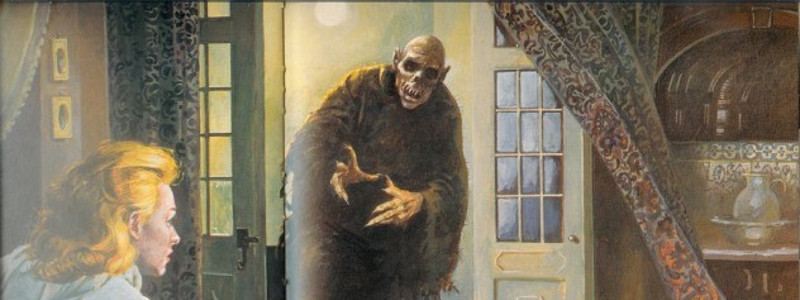
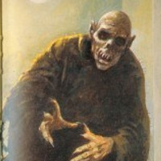

Peter Plogojowitz
Peter Plogojowitz was a man from 1700s Serbia who died (don’t we all?). Except—according to some—he didn’t really stay dead.
The Alnwick Castle Vampire
The Alnwick Castle vampire actually predates the term “vampire.” The events were recorded by an English chronicler named William of Newburgh.

The Vampire Of Croglin Grange
TLady Cranwell noticed strange lights in the garden below, but thought nothing of it until she woke to find the lights at her window - but they weren't lights.
When people think of vampires, they usually think of famous fictional bloodsuckers like Dracula or his historical counterpart, Vlad the Impaler. Perhaps younger people will think of True Blood, The Lost Boys or the sparkly vampires of Twilight. But there have been plenty of vampire tales that stemmed from real events or people, like...
Peter Plogojowitz
Peter Plogojowitz was a man from 1700s Serbia who died (don't we all?). Except - according to some - he didn't really stay dead. Within 10 weeks of his death, nine people died suddenly from a mystery illness, and prior to their deaths they all accused Peter Plogojowitz of throttling them in their dreams. Peter's own son reported seeing him in the kitchen three days after his death, demanding food—before he also died mysteriously. Peter's wife fled town after she alleged he'd shown up late one night to demand a pair of shoes.
The army was called in, and Peter's body was exhumed. It was reported that he was breathing and that his open eyes were moving. A stake was put through his heart, resulting in a Tarantino-esque gushing of blood, and his body burned. The deaths and dreams all ended abruptly.
The Alnwick Castle Vampire
The Alnwick Castle vampire actually predates the term "vampire". The events were recorded by an English chronicler named William of Newburgh. He reported the story of a man who returned from the dead after he died while spying on his cheating wife-he was crouched on the roof and fell. He then returned as a revenant-a walking, rotting corpse-spreading plague in his wake.
Eventually, a priest gathered some of his parishioners and found the vampire's grave. They opened it and stabbed the corpse with a shovel. Warm blood ran from the body and confirmed their suspicions that it had been drinking the blood of the living (remember this was almost 800 years before Bram Stoker's Dracula). They burned the body, and the attacks ceased.
The Vampire Of Croglin Grange

This event began in the 1800s when the Cranwell Family took up residence in Groglin Range in Cumbria. Lady Cranwell noticed strange lights in the garden below, but thought nothing of it until she woke to find the lights at her window-but they weren't lights. They were eyes.
Lady Cranwell was frozen in terror as she saw the thing outside her window remove the panes one by one before reaching a rotten hand through and opening the latch. Her brothers heard her screaming and ran in to help her, arriving just in time to see her bleeding profusely from the neck as a catlike figure darted out into the darkness.
The brothers decided to slay the vampire. Some time later, they returned to the estate and set a trap. Lady Cranwell pretended to sleep in the same room the original attack happened in. When the vampire tried to come through the window again, the brothers jumped out with pistols and shot at it. It screamed and ran off into the night. The next day, the brothers gathered an angry mob and searched the graveyard until they found an open crypt. Inside were gnawed bones and an open coffin containing a rotten corpse with a recent bullet wound. Needless to say, they burned it.
About Author
Aaron has written a few articles for Listverse and Cracked.com. He also has a blog (where he mostly rambles about about bad movies) here.